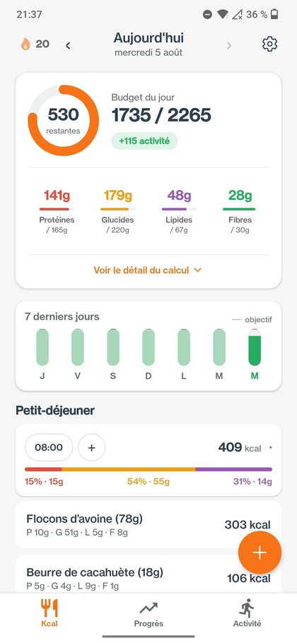
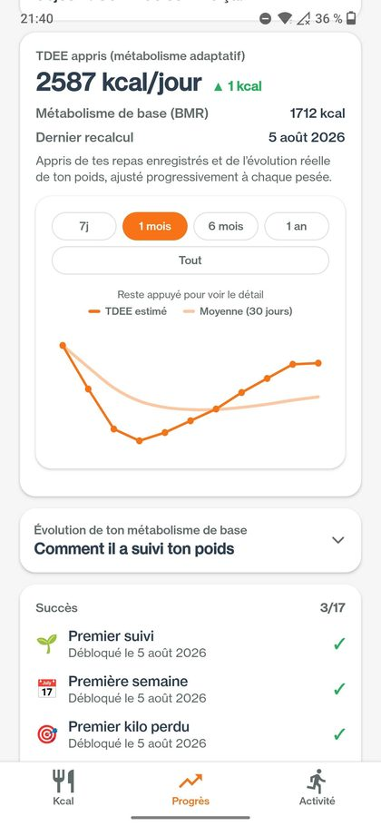
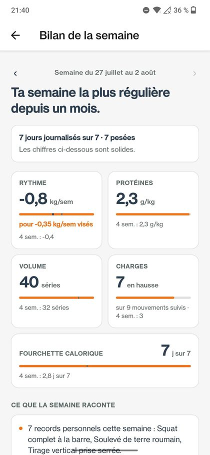
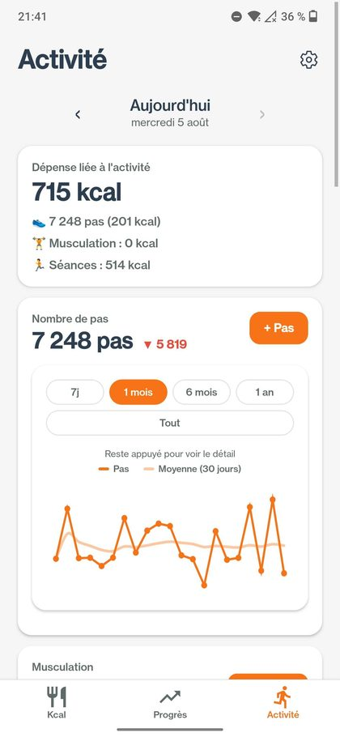
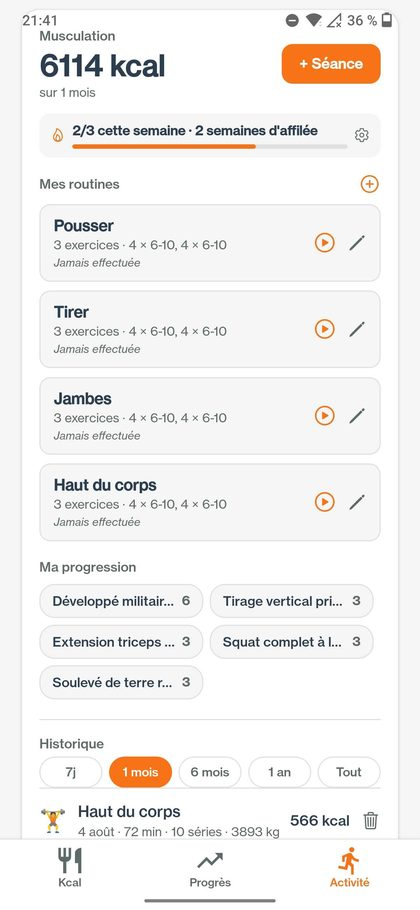
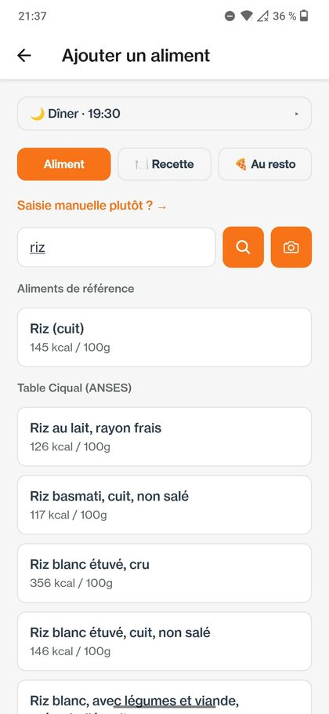
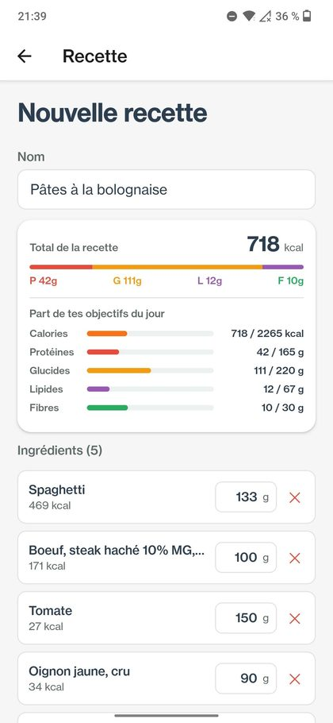
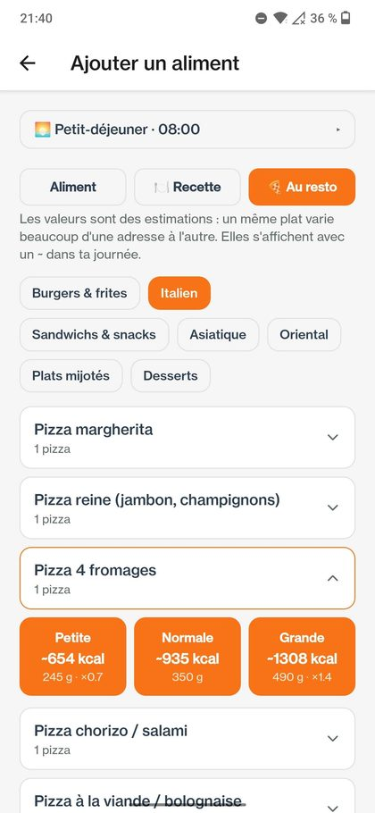
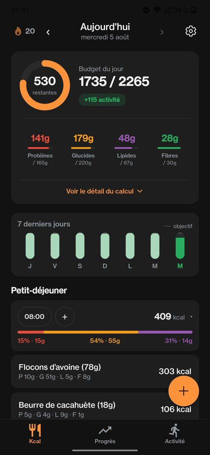

Le suivi nutritionnel dont les calculs s'adaptent à toi, plutôt que
de te comparer à une moyenne.
Ce que fait l'application
Suivi des calories et des macros, par repas, avec recherche d'aliments et scanner de code-barres.
Suivi du poids et de sa tendance, lissée pour absorber les fluctuations normales.
Séances de sport et musculation : plus de 870 exercices, séries, charges, records.
Dépense énergétique calculée à partir de la durée, de l'intensité et du poids — jamais saisie à la main.
Ce qui la distingue
Un métabolisme qui s'apprend
Le point de départ est la formule de Mifflin-St Jeor, mais l'application compare
ensuite les calories enregistrées à l'évolution réelle du poids pour en déduire la
dépense effective. Une estimation théorique ne bouge jamais ; celle-ci se corrige.
Calcule le tien
·
Comment ça marche
La nutrition croisée avec l'entraînement
Basal connaît les deux et les rapproche : le volume reçu par chaque groupe
musculaire, les protéines des jours d'entraînement comparées aux jours de repos, et
le signe qu'une perte de poids ne se fait pas au détriment du muscle.
Elle constate, elle ne prescrit pas
Quand les données sont trop minces pour conclure, elle le dit plutôt que de
présenter du bruit comme un fait.
À quoi ça ressemble

Le budget du jour

Le métabolisme appris

Le bilan de la semaine

L'activité et les pas

Les séances et les routines

La recherche d'aliments

Les recettes

Les plats au restaurant

Le thème sombre
Tes données
Aucun compte n'est nécessaire : sans compte, le profil, le poids et les repas restent sur
l'appareil. Créer un compte permet de les retrouver sur un autre téléphone ; ils sont alors
hébergés dans l'Union européenne, et supprimer le compte les efface. Aucune publicité,
aucune revente. Export possible à tout moment.